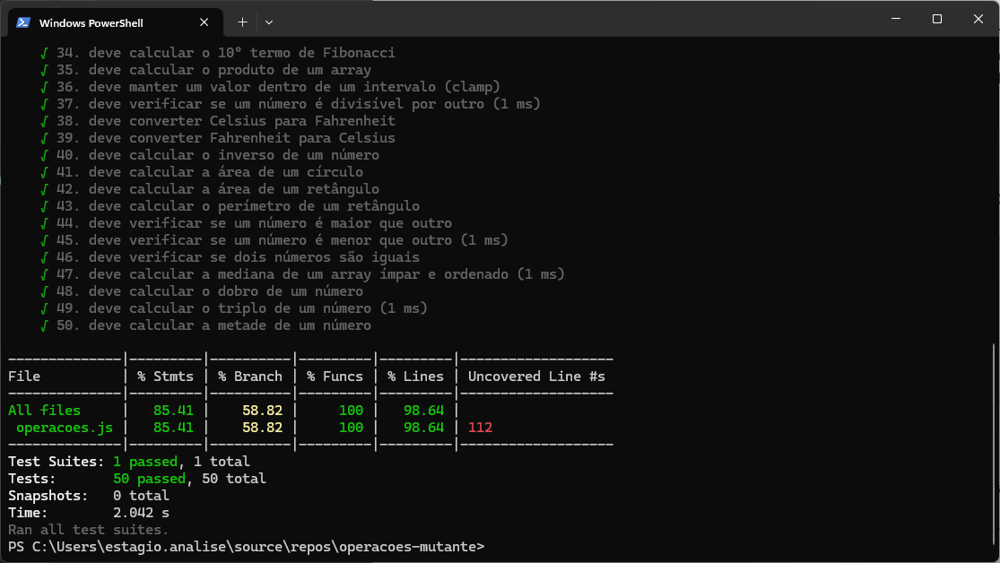
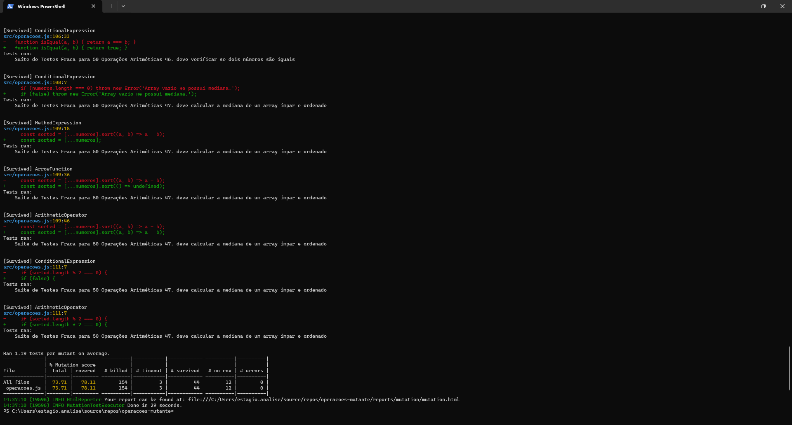
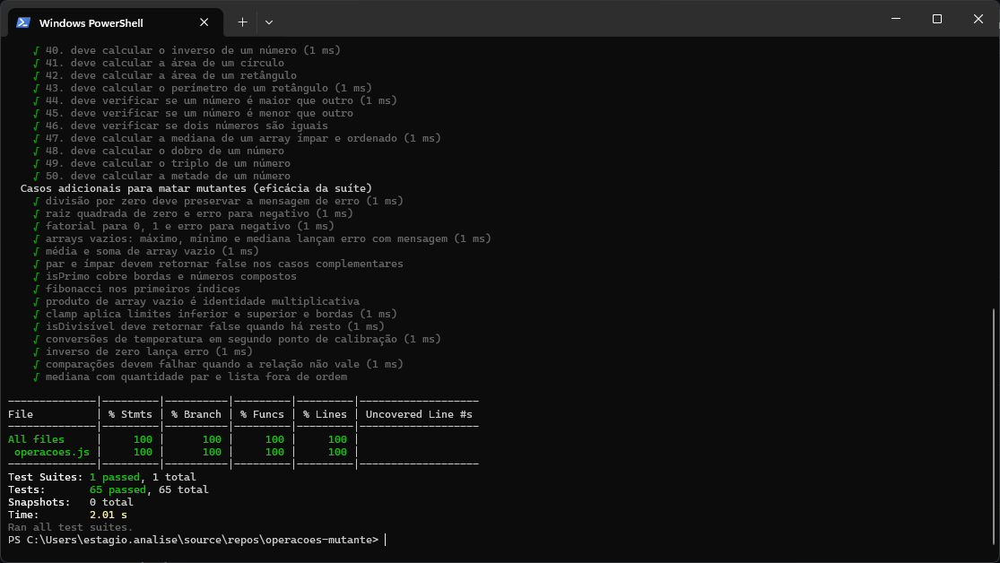
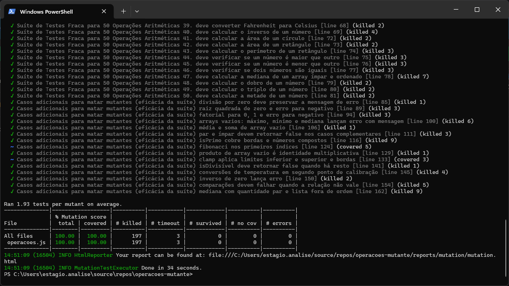

operacoes-mutanteO projeto traz 50 funções em src/operacoes.js e uma suíte com um teste por função: tudo passa e a cobertura parece boa, mas ela só mede execução de linhas, não se uma mudança sutil no código seria pega.
Cobertura (Jest, suíte inicial): conforme Fig. 1 — linhas ~98,64%, statements 85,41%, branches 58,82%, funções 100%; linha 112 ainda não coberta. Branches baixos já indicam ramos pouco exercitados.
Mutação (Stryker, 1ª execução): Fig. 2 — score 73,71%, 44 sobreviventes, 12 sem cobertura, 3 timeouts (ex.: Fibonacci recursivo sob mutação). No recorte aparecem Survived em medianaArray: o teste só usa lista ímpar ordenada, então mutações no sort ou no ramo “par” passam.
Discrepância: cobertura alta não implica testes fortes. toThrow() sem texto aceita qualquer erro; um único isMaiorQue(10,5) não distingue > de >=. O Stryker injeta esses bugs; se o teste continua verde, o mutante sobrevive.


A Fig. 2 mostra Survived em medianaArray: o Stryker, por exemplo, remove o .sort(...), troca o comparador a - b por a + b ou anula o if (sorted.length % 2 === 0). O teste só chama medianaArray([1,2,3,4,5]) (ímpar e ordenado), então o resultado “3” continua igual e o mutante passa.
(i) Divisão por zero. Mutação típica: StringLiteral — a mensagem da Error vira "". O teste antigo só usava toThrow(); qualquer exceção satisfaz, logo o mutante sobrevive.
(ii) isMaiorQue. Mutação: operador EqualityOperator trocando a > b por a >= b, ou ConditionalExpression retornando sempre true. Com apenas isMaiorQue(10,5) esperando true, não há como distinguir > de >= nem forçar falha no “sempre true”.
(iii) raizQuadrada. Mutação: condição if (n < 0) virando if (false) (ou similar). Só se testava raizQuadrada(16); o ramo de erro nunca rodava, então o mutante não era morto.
Mantive os 50 testes e acrescentei um describe com 15 blocos. Exemplos que amarram diretamente aos mutantes acima: expect(() => divisao(1,0)).toThrow('Divisão por zero não é permitida.'); expect(isMaiorQue(3,5)).toBe(false) e expect(isMaiorQue(5,5)).toBe(false); expect(() => raizQuadrada(-4)).toThrow('Não é possível calcular a raiz quadrada de um número negativo.') e expect(raizQuadrada(0)).toBe(0); expect(medianaArray([4,1,3,2])).toBe(2.5) para forçar ordenação e o ramo par. Também incluí mensagens em outros erros, predicados com false, arrays vazios, clamp, temperaturas e demais pontos fracos do primeiro relatório. Jest: testPathIgnorePatterns com .stryker-tmp. Stryker: ignorePatterns .vs/**. Ajustes pontuais em fatorial, produtoArray e clamp para reduzir mutações equivalentes.
Mutation score 100% (meta > 98%). Alguns timeout em mutantes agressivos no Fibonacci; não aparecem como Survived. Cobertura em operacoes.js passa a 100% nas quatro colunas (Fig. 3).
| Métrica | Antes | Depois |
|---|---|---|
| Mutation score | 73,71% | 100% |
| Cobertura (lin / stmt / branch / fn) | ≈ 98,6 / 85,4 / 58,8 / 100% | 100% / 100% / 100% / 100% |
| Testes | 50 | 65 |


Cobertura e mutation score medem coisas diferentes: aqui, ~99% de linhas ainda convivia com ~74% de score. O Stryker mostrou onde os asserts eram fracos; reforçá-los elevou o score e alinhou melhor “código exercitado” com “comportamento verificado”. Para entregas críticas, uma rodada de mutação compensa como revisão objetiva da suíte.